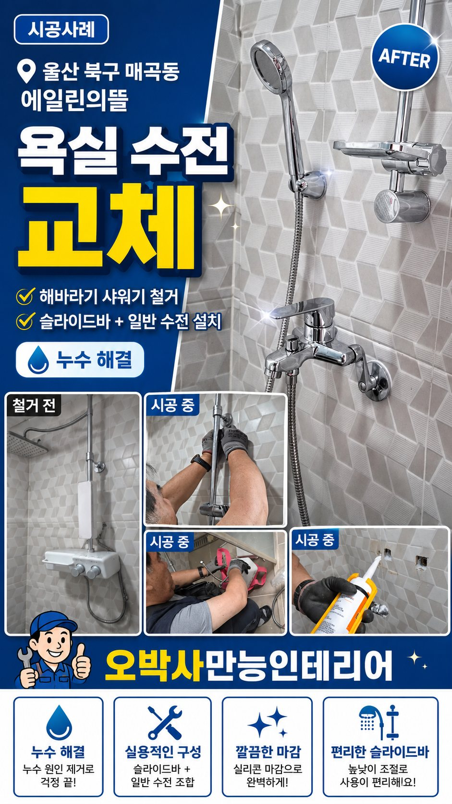

시공사례 게시판
울산 집수리 현장을 한눈에 봅니다
오박사만능인테리어가 울산 북구를 중심으로 진행한 누수복구, 세면대 교체, 방화문수리, 도배 장판, 욕실 수리, 생활 집수리 사례를 게시판형 목록으로 정리했습니다.
11시공 사례
3욕실수리
2방화문수리
1누수복구


울산 북구 매곡동 에일린의뜰 욕실 수전 누수 해바라기 샤워기 철거 후 일반 수전 교체
누수 원인이 된 해바라기 샤워기를 철거하고 일반 수전과 슬라이드바로 바꾼 욕실 수리 현장입니다.
날짜
분류
제목 / 요약
보기
2026.06.05
욕실수리
울산 북구 매곡동 에일린의뜰 욕실 수전 누수 해바라기 샤워기 철거 후 일반 수전 교체
누수 원인이 된 해바라기 샤워기를 철거하고 일반 수전으로 바꾼 현장입니다.